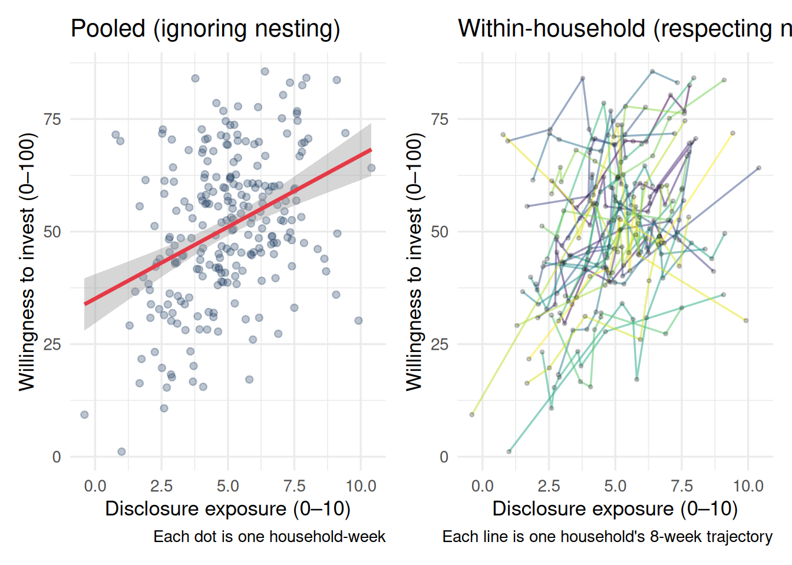

Imagine you want to understand how rivers move. You walk up to a river and take a photograph. The photograph captures the river’s position at exactly that moment — the precise shape of the water, the location of each ripple, the exact color of the surface.
Now: how much can you learn about the river from one photograph?
You can learn something. You can see that it flows roughly north, that the banks are wide, that the water looks fast. But you cannot see the seasonal floods, the drought periods, the long-term shift of the channel, or the way the current varies across different cross-sections. One photograph freezes a moment in an ongoing process.
Your dataset is that photograph. The process that generated your data — the underlying mechanisms, the population of people, the range of contexts, the flow of time — is the river. Your job as a researcher is to infer as much as possible about the river from your one photograph. The models in this workshop are tools for doing that inference more honestly.
4.2 What is a Data-Generating Process?
A data-generating process (DGP) is the full set of mechanisms that produce your data. It includes:
The population of units you are sampling (people, firms, countries, neurons)
The population of contexts, stimuli, or conditions under which observations occur
The temporal process by which things change and unfold
The relationships between variables — what causes what, and how strongly
Your dataset is one realization of this process. A different sample, a different week, a different set of stimuli, would have given you different numbers — but from the same underlying process.
The question that motivates nested data analysis is: what does this realization tell us about the process?
4.3 Why the DGP is Almost Always Nested
Think about the last study you ran or analyzed. Ask yourself: where did the observations come from?
People are sampled from populations that have subgroups, histories, cultures, and contexts. A sample of Dutch students in 2024 is not the same as a sample of American workers in 1990, even if both studies measure “risk preference.”
Time points are sampled from a continuous process. A mood rating collected at 9am on a Tuesday is part of a longer trajectory of mood for that person, and is nested within their week, month, and life stage.
Stimuli or items — the vignettes, products, words, or images you use — are sampled from a much larger space of possible stimuli. Your findings will generalize to the extent that your stimuli are representative.
Context — the lab, the country, the platform, the season — introduces systematic variance that your model needs to account for.
In every case, observations are not independent draws from a flat distribution. They cluster. People who share a classroom share a teacher. Employees at the same firm share a manager, a culture, and an incentive structure. Responses to the same survey item at different times are correlated because the person has not changed that much between measurements.
The independence assumption — that each observation is an independent draw, unrelated to all others — is almost never literally true. It is, at best, an approximation. And it is an approximation that can go badly wrong.
4.4 A Simple Demonstration
Let’s make this concrete. Suppose we study whether daily hours of sleep predict mood. We collect 7 days of data from 30 people: 210 observations total.
Code
# Simulate: 30 people, 7 days eachn_people <-30n_days <-7# Each person has their own baseline mood (random intercept)# and their own sleep-mood relationship (random slope)person_intercepts <-rnorm(n_people, mean =50, sd =8)person_slopes <-rnorm(n_people, mean =3, sd =2)df <-expand_grid(person =1:n_people,day =1:n_days) |>mutate(sleep =rnorm(n(), mean =7, sd =1.5),mood = person_intercepts[person] + person_slopes[person] * (sleep -7) +rnorm(n(), 0, 5) )# Plot: pooled view (ignoring nesting) vs. within-person viewp1 <-ggplot(df, aes(x = sleep, y = mood)) +geom_point(alpha =0.3, color ="#1e3a5f") +geom_smooth(method ="lm", color ="#e63946", se =TRUE) +labs(title ="Pooled (ignoring nesting)",x ="Hours of sleep",y ="Mood (0-100)",caption ="Each dot is one person-day" ) +theme_minimal(base_size =13)p2 <-ggplot(df, aes(x = sleep, y = mood, group = person)) +geom_line(aes(color =factor(person)), alpha =0.5, show.legend =FALSE) +geom_point(alpha =0.2, size =0.8) +labs(title ="Within-person (respecting nesting)",x ="Hours of sleep",y ="Mood (0-100)",caption ="Each line is one person's 7-day trajectory" ) +theme_minimal(base_size =13) +scale_color_viridis_d()library(patchwork)p1 + p2

The left panel treats all 210 observations as independent. It shows something — there’s an upward slope — but it blurs together two very different sources of variation: (1) people who generally sleep more also tend to have higher baseline mood, and (2) on days when a given person sleeps more, their mood is higher. These are distinct phenomena. The right panel begins to separate them.
The data-generating process here has clear structure: a person-level layer (baseline mood, general sleep habits) and a day-level layer (deviation from that baseline). Ignoring that structure does not just make our estimates less precise. It can make them wrong.
4.5 The Three Questions
Every dataset you encounter deserves three questions before you run a single model:
ImportantThree DGP Questions
1. What is the sampling unit? What are the rows in your dataset? People? Days? Observations? Products? Multiple types nested inside each other?
2. What are the higher levels? Are your sampling units grouped into something larger? People within countries? Days within people? Patients within therapists? Even if you did not design the study this way, the DGP probably has this structure.
3. What assumption does my model make about the relationship between levels? Standard regression assumes levels do not exist — every row is independent. Is that reasonable? Can you quantify how wrong it is?
These questions are not rhetorical. Answering them is the first step of every analysis in this workshop.
4.6 The DGP Frame vs. the “Fix My Standard Errors” Frame
There is a narrow and a broad way to motivate multilevel models.
The narrow frame says: clustered data violates the independence assumption, which inflates Type I error rates. You need multilevel models to get correct standard errors.
This is true and important. But it is a surprisingly weak reason to care about these models. It frames them as a statistical correction — something you do defensively to avoid getting dinged in review.
The broad frame says: your data has structure that reflects real processes. The variance at the person level is not nuisance to be corrected — it is scientifically interesting. How much does baseline mood vary across people? How much does the sleep-mood relationship vary? Who benefits most from sleep? These are not questions about standard errors. They are questions about the heterogeneity of human experience.
The models in this workshop answer both frames. But the broad frame is the more interesting one, and it is the one that will make you a better researcher.
4.7 Recommended Reading
Topic
Citation
Introduction to multilevel modeling for psychologists
Hoffman, L. (2015). Longitudinal Analysis: Modeling Within-Person Fluctuation and Change. Routledge. (Chapter 1)
The DGP perspective in econometrics
Angrist, J. D., & Pischke, J. S. (2009). Mostly Harmless Econometrics. Princeton University Press. (Chapter 1)
Why nesting matters for experiments
Judd, C. M., Westfall, J., & Kenny, D. A. (2017). Experiments with more than one random factor: Designs, analytic models, and statistical power. Annual Review of Psychology, 68, 601–625.